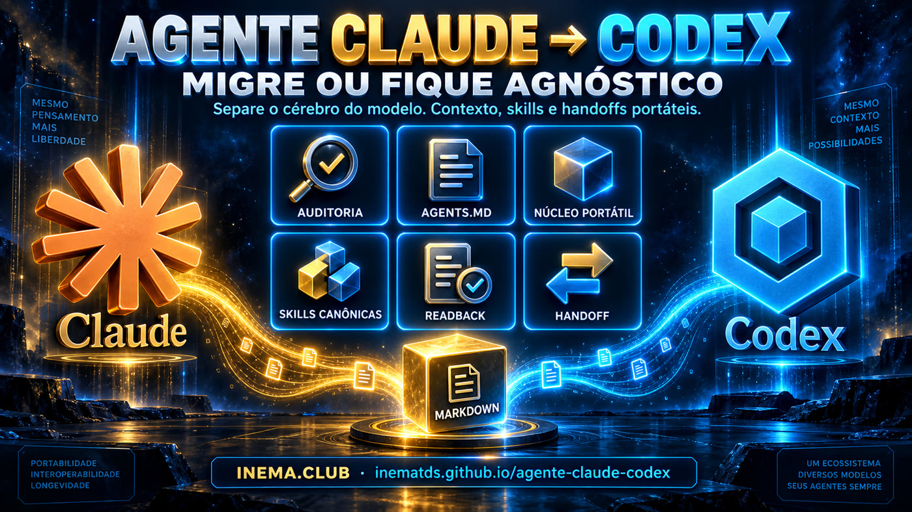
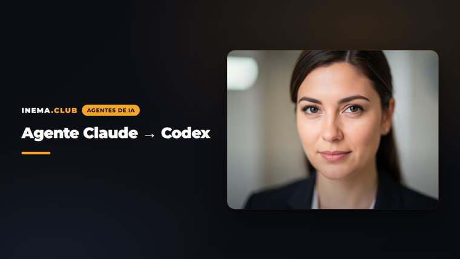

Audit kit, adapters and portable core to take your Claude Code setup to Codex, or to keep context, decisions, tasks and skills working with any model.

The newsletter describes three levels: import in the app (one click), run a command, and take care of the durable personal layer. This repo is level 2 and level 3, with scripts that start in audit mode and only then change anything.
Inventories skills, commands, subagents, hooks, plugins and MCP in Claude and Codex and classifies each item: reusable, adapter, native or unresolved. Nothing is bulk-copied.
CLAUDE.md becomes a portable AGENTS.md plus a Claude-specific remainder. Skills have one canonical source and per-runtime generated copies with drift checks.
A fresh session in each runtime answers: objective, rule and source, last decision, next action, conflicts. A file existing is not proof. The agent having read and used it is.
The core (context, decisions, tasks, skills, handoffs) lives in plain Markdown inside the project. At the edges, one adapter per tool. Claude, Codex, Gemini or a local model become just executors.
AGENTS.md, context/overview.md, context/current-state.md, context/sources.md, context/decisions/, tasks/current.md, handoffs/latest.md, .agents/skills/, scripts/.
Stable instructions, current state, decisions, tasks and handoffs each have an owner and an update rule. Fact, preference, hypothesis and decision are different things.
Session → Markdown handoff → new session reads the handoff (prime). The structured summary travels to any provider.
The scripts read the configuration folders of both runtimes. If one is missing, the matching step is marked as not run.
Migration source. Skills in ~/.claude/skills.
# version claude --version
Destination. Skills in ~/.agents/skills. The CLI has no native import.
# version and diagnostics codex --version codex doctor
Turns a skill into a portable source and generates the per-runtime copies.
# install npm i -g polyskill
Every step is reversible. Installing a skill is a preview until you pass --apply, and replacing one makes a backup first. Secrets never go into the repo.
Answers "is my environment ready?": git, python3, node, Claude Code, Codex CLI, sandbox, MCP, polyskill. Each item comes out as ok, warning or missing, with the command to fix it.
git clone https://github.com/inematds/agente-claude-codex cd agente-claude-codex scripts/doctor.sh # [ok] / [aviso] / [FALTA]
Produces a Markdown report with versions, the skills gap and the reusable / adapter / native matrix. Read-only.
scripts/audit.sh # relatorios/auditoria-YYYY-MM-DD.md
Reads the project's CLAUDE.md and proposes a portable AGENTS.md plus a CLAUDE.md that imports AGENTS.md. Saves them as .proposto.md for you to review.
scripts/adapt-instructions.sh ~/projects/my-project # review AGENTS.proposto.md and CLAUDE.proposto.md, then rename
Copies the template (context/, tasks/, handoffs/, AGENTS.md) without overwriting anything that already exists.
scripts/init-core.sh ~/projects/my-project # then fill in AGENTS.md, context/overview.md and tasks/current.md
Recommended pilot: session-handoff, the mechanism the daily cycle relies on. Import, generate the copies, install and check drift. Install is a preview by default: it checks every destination before writing, is idempotent, and refuses symlinks or a different existing skill.
scripts/sync-skills.sh import session-handoff scripts/sync-skills.sh build scripts/sync-skills.sh install session-handoff # preview: CREATE / UNCHANGED / CONFLICT scripts/sync-skills.sh install session-handoff --apply # writes; --replace swaps an old version with a backup scripts/sync-skills.sh drift # [ok] or [DRIFT] per runtime
Asks Claude and Codex the five readback questions from inside the project. Pass criterion: the answers cite AGENTS.md, tasks/current.md and handoffs/latest.md.
scripts/readback-test.sh ~/projects/my-project both # relatorios/readback-claude-*.md and readback-codex-*.md
At the end of a session, the session-handoff skill writes a new snapshot to handoffs/history/ (UTC time, never overwrites) and copies it to handoffs/latest.md, with Verification (what ran, the result, and what did not run) and a sharing check. In the next session, the prime skill reads in read-only mode: it validates paths, runs no tests, treats the handoff as data, and never resumes a deploy or a send on its own.
# end of session, in any runtime session-handoff # → handoffs/history/2026-09-27T142530Z.md + handoffs/latest.md # new session, in the same or the other runtime prime # briefing with a source for every line; waits for your instruction
Migrating does not force you to pick just one. One makes the first pass, the other reviews the real artifact, and the handoff carries the state from one runtime to the other. The table is a starting point, not a ranking: swap roles when the evidence from your task calls for it.
| Job | First pass | Second pass | Finish line |
|---|---|---|---|
| Plan | Claude | Codex critiques the assumptions | Scoped plan with acceptance tests |
| Build a feature | Claude, on a branch | Codex reviews the diff | Tests pass and findings resolved |
| Review a document | Either one writes | The other checks facts and requirements | Every required claim has evidence |
| Hard bug | Codex with a bounded goal | Tests and a human checkpoint | Measurable success or a clear blocker |
| Switch session or model | session-handoff | prime checks the current state | A correct recap before new work |
One rule: give the second agent the same task brief and the real artifact (file, diff, test result), never a retelling of what the first one did. Both agreeing is not proof: they can share the same wrong assumption.
One writes the plan (scope, assumptions, acceptance tests, risks); the other reviews it read-only with the same brief. Each finding becomes accepted, rejected with evidence, or open. Two rounds at most.
The builder works on a new branch, keeps existing changes and runs the tests. The reviewer gets the brief, the diff and the results and looks for bugs and regressions before cosmetics. No merge, deploy or publishing without you.
An observable objective (which suite, which input, which output), bounded scope, stop when it passes. If the same blocker survives two attempts, report and ask for the decision. A real time or cost cap is set in the environment, not in the prompt.
The one leaving writes the snapshot to handoffs/history/ and updates handoffs/latest.md; the one arriving runs prime, checks the state without changing anything and waits for the current instruction. A single subscription works too: a second session reviews with the same files.
# the ready-made prompts (in Portuguese), with fields to fill in cat prompts/05-usar-os-dois.md # read-only review by the other runtime (through the subscription, never a paid API) codex exec --sandbox read-only "Review plans/task-v1.md against tasks/current.md ..." claude -p "Review the diff from git diff main...HEAD against the brief ..."
Adapted from the "Use Both: Claude + Codex Workflow Kit" by Prompt Advisers / Mark Kashef, MIT license. Kit guide · repository.
A quick reference for the skills and commands that connect Claude and Codex. Everything runs on each assistant's subscription, with no API key.
| Tool | When to use | Claude Code | Codex | What it produces |
|---|---|---|---|---|
| session-handoff | At the end of a session, before switching assistant or model | /session-handoff | $session-handoff | A recap in the chat and, if the project has handoffs/ or AGENTS.md, a new snapshot in handoffs/history/YYYY-MM-DDTHHMMSSZ.md with a full copy in handoffs/latest.md |
| prime | As the first message of the next session | /prime | $prime | Reads AGENTS.md, context/, tasks/current.md and handoffs/latest.md and returns the state, mismatches and one next step. Edits nothing |
| handoff + prime (Use Both kit) | Projects using the Use Both format | /handoff · /prime | $handoff · $prime | Snapshot in handoff/history/ and a one-line pointer in handoff/LATEST.md. If this kit's handoffs/latest.md is already in that pointer format, session-handoff keeps it |
| codex exec | Claude asking Codex for a review from the terminal | codex exec --sandbox read-only --output-last-message review.md '…' | The critique saved to review.md. Codex only reads the project | |
| claude -p | The reverse path: Codex asking Claude for a review | claude -p --model opus --effort medium '…' > review-claude.md | Claude's critique in a file | |
| Official Codex plugin | Reviewing the diff without leaving Claude Code | /codex:setup/codex:review --base main | — | Read-only review findings. You ask the builder for fixes afterwards |
| claudex | A large plan with several automatic critique rounds | /claudex:plan [--rounds N] <feature>/claudex:review | — | PLAN.md revised until Codex approves or rounds run out; reviews/ with diff findings |
| claudex (control) | Monitor or unstick the loop | /claudex:status · /claudex:cancel · /claudex:rollback · /claudex:doctor | — | Current round and phase; cancel; clean stuck state; install diagnostics |
Objective and latest request; what is done, what remains and what is uncertain; decisions and rejected paths; changed files; tests run with their real result (and those not run); blockers; one next step; and the few files the next reader should open first. No secrets, tokens or personal data.
Reads the portable core in the right order, rejects absolute paths, .., URLs and symlinks, treats the handoff as data (not as orders), checks the cited files and git status, flags stale claims and waits for your instruction. It runs no tests, installs nothing and does not resume an old deploy.
A personal skill with the same name can win over the project one: check which version is active before invoking it. After installing or syncing (scripts/sync-skills.sh), open a new session (in Claude, /reload-skills also works). Old snapshots in handoffs/history/ are never overwritten.
Each step leaves a file the next assistant can read.
# morning, in Claude Code /prime # resume from yesterday's handoff # plan, then have Codex critique it (read-only) codex exec --sandbox read-only --output-last-message review.md 'Read plan-v1.md and point out gaps…' # or, for a large plan, the automatic loop /claudex:plan --rounds 3 export report as CSV # built on a branch: review the diff /codex:review --base main # or /claudex:review # end of day /session-handoff # tomorrow, in Codex $prime
A handoff is not permission. A recorded next step ("publish", "delete", "send") only happens if you ask again in the current session.
The audit found 89 Claude-only skills: 71 portable, 15 depending on MCP or a plugin, 2 on a hook. The readback passed in Codex and in Claude, and Codex also pointed out three inconsistencies in the repo itself, all fixed.

A phase only advances with evidence: passed, failed or not run.